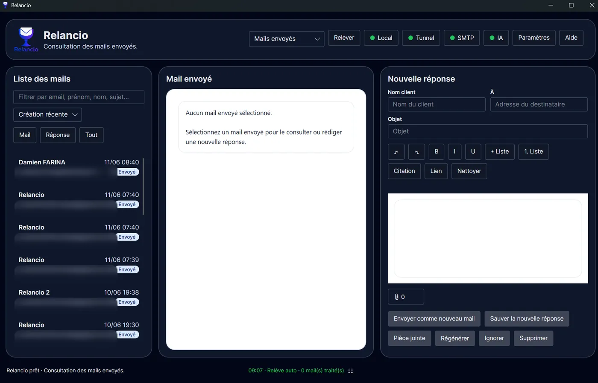

Relancio
Application desktop
Le cœur de Relancio : mails reçus, mails envoyés, réponses proposées et validation.
Vue principale
L'application desktop est le cœur de Relancio. Elle sert à relever les mails, consulter les demandes, ajuster les réponses proposées et déclencher les envois.
- La colonne gauche liste les mails et propose recherche, tri et filtres.
- Le panneau central affiche le mail client ou le mail envoyé sélectionné.
- Le panneau droit contient la réponse proposée, modifiable avant sauvegarde ou envoi.
- Les voyants Local, Tunnel, SMTP et IA donnent un aperçu rapide de l'état des services utiles.

Réponse proposée
Avant l’envoi, vous pouvez corriger le nom client, l’adresse destinataire, l’objet et le contenu de la réponse. L’éditeur permet les listes, citations, liens, gras, italique, souligné, annulation, rétablissement et nettoyage de mise en forme.
L’icône de consultation des pièces jointes ouvre une vue étendue de la réponse. Elle facilite la relecture, la modification du contenu et la gestion des pièces jointes sortantes avant l’envoi.
- Sauver conserve la réponse.
- Régénérer demande une nouvelle proposition à l’IA locale.
- Envoyer expédie le mail via le SMTP configuré.
- Ignorer ou Supprimer servent à gérer les mails qui ne nécessitent pas de réponse.

Mails envoyés
La vue Mails envoyés permet de consulter l'historique des messages expédiés depuis Relancio et de préparer une nouvelle réponse lorsque le contexte le justifie.

Statuts visibles
Les badges comme À traiter, Envoyé ou Non répondu aident à suivre l'état des demandes et réponses. Les filtres permettent de retrouver plus vite les messages à traiter.